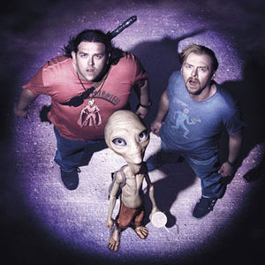

Инопланетяне существуют
МОСКВА, 8 авг — РИА Новости, Альфия Еникеева.
По данным ВЦИОМ, 36 процентов россиян верят в инопланетян. При этом четверть считает, что они периодически посещают Землю, но скрываются от людей. И хотя явных следов пришельцев не обнаружили, есть мнение, что по крайней мере часть рассказов — правда. Как ищут рациональные объяснения сверхъестественному — в материале РИА Новости.
Пережившие похищение
Первые сообщения о встречах с пришельцами появились в 1950-е. Тогда бразилец Антонио Вилас-Боас заявил: "Меня похитили инопланетяне". Работая в поле, он, по его словам, заметил НЛО. Оттуда вышла группа гуманоидных существ и затащила его в космический корабль, где он и провел несколько часов.
Впоследствии истории о встречах с пришельцами и похищениях ими людей стали приходить из разных уголков планеты. Правда, в основном инопланетные гости предпочитали воровать американцев. И главным образом женщин. По разным данным, от 60 до 75 процентов похищенных — представительницы прекрасного пола.
По мнению скептиков, выбор граждан США в качестве жертв объясняется тем, что в стране очень популярны книги об НЛО и внеземных цивилизациях.
Но мы то с Вами знаем, что это был не просто сон
Люди, заявляющие, что видели летающие тарелки, общались с инопланетянами или даже попадали в плен на их космические корабли, скорее всего, не врут — так утверждают основатель российского частного Центра изучения фаз сна и сотрудничающие с ним исследователи. Возможно, такие свидетельства — результат пережитого опыта, правда, случившегося во сне. Ночные видения были настолько реальны, что, проснувшись, "похищенные инопланетянами" не сомневались: все произошло на самом деле. Авторы работы проанализировали несколько десятков рассказов людей, встречавшихся с пришельцами, и обратили внимание — все они описывают свое состояние как похожее на сон. А значит, истории могли быть обычными, пусть и очень яркими сновидениями.